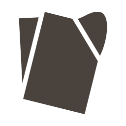

Flier Studio identity: brief for an identity designer
Task: LOGO-1 "A logo pipeline that makes beautiful, animatable marks" · written 2026-10-28 · text version: brief.md (same content).
Two in-house rounds produced no mark at the bar (every criterion at least 3 of 5, mean at least 4, scored by our design critic on Paul Rand's seven qualities plus craft, fit and motion). This brief hands the mark to you with everything we learned.
1. Product and audience
- Flier Studio (fliers.dloizides.com): someone who runs classes or parties fills one form and downloads a set of event fliers and phone wallpapers, all in the browser.
- Who: organisers, mostly on a phone. They first meet the mark as a browser tab, a home-screen icon or a link-share card.
- The one feeling: a calm tool. The flier is the loud thing; the app chrome is ink on paper-white.
- Name: "Flier" is a printed sheet handed out, and also "one that flies".
2. Approved visual language
The product's rules are approved by the owner and bind the mark: apps/flier-studio/docs/visual-language.md (rules R1-R11). Fleet-wide rules: BaseClient/docs/code-standards/visual-language.md.
The rules that touch the mark most:
| Rule | What it means for the mark |
|---|---|
| R6 shape families | fliers are square paper (radius 0); four crop-mark corners mean "selected" in the app |
| R3 saturation | one colour; the accent colour never appears in the mark |
| R7 colour | primary ink #4a423c on light; reversed #e8dccb on dark (7.27:1) |
| R10 motion | no overshoot; at most one moving thing at a time; reduced motion = the still mark |
| R11 one set of marks | the same mark on tab icon, home-screen icon (incl. maskable), share card, dloizides.com card, app header; never inside a customer's poster |
| References | the print shop: crop and registration marks, paper stock, swatch fans, letterpress, guillotine, imposition, fold marks, press delivery |
3. Attributes
- crafted, not decorative
- calm, not sleepy
- made of paper, not of pixels
Rejected before: three simple marks "Trim", "Crop F", "Register" (owner: "too basic").
4. What was tried
Round 1 (34 thumbnails, 6 concepts, 3 refined). Critique: ../critique-2026-10-28-lp7.md.
| Mark | Mean | Why it failed |
|---|---|---|
| A "Dealt F" (an F made of three dealt sheets) | 3.2 | the same block-F grammar as Flipboard's mark at 32 px; recalled only as "an F" |
| B "Fan deck" (printer's swatch fan) | 3.4 | a stock swatch-book icon; says "colour picker", not fliers. Its fan-open motion scored 5 of 5 |
| C "In flight" (a sheet with a curling corner) | 3.0 | the curl read as a broken wedge or "J."; the intro only faded |
Dropped before refining: letterpress sort (too heavy at 16 px, read as a monitor), trim offcut (stock file dog-ear), gutter cross (layout-grid icon), misregistered plates (stock copy/layers icon).
Round 2 (three redraws of C). Critique: ../r2/critique-2026-10-28-lp7-r2.md.
| Mark | Mean | Why it failed |
|---|---|---|
| C2a "Peel" (corner turned back over the face) | 3.3 | at 24 px it is the stock folded-corner file glyph; curl gap 1.1 px at 16 px |
| C2b "Lift" (corner lifting off the page) | 3.1 | 16 px ink 36.4% (over the band); read as "a tag"; the flap is larger than its cut |
| C2c "Pair" (Lift plus a second sheet fanned behind) | 3.1 | 16 px ink 37.6%; the back sheet is a 1-2 px sliver that smears; two ideas in one mark |
Every round-2 intro overshot to scaleY(1.08), against R10.
5. The strongest lead: C2c "Pair"
The product makes a set of fliers from one form. "Pair" was the only mark a cold reader named as the product ("two cards, a deck"). The critic's ranking: Pair > Peel > Lift.
What to keep and what to fix, from the critique:
- One idea, not two: two straight-edged sheets in true 1:1.414 proportion, without the lifted corner.
- The back sheet offset by at least 2 px at 16 px on two sides, never a sliver.
- 16 px ink at or under 35%, or a dedicated small-size glyph.
- Check it against the nearest stock glyphs (Lucide
filesandcopy, Materialfile_copy) at 24 px; it must not share their outline. - Borrow round 1 B's motion: parts opening about one pivot.
Images: ../r2/png/refined/c2c.png, c2c-16.png, c2c-lockup-h.png; construction grid ../r2/png/construction-c2c.png; stress frames ../r2/png/stress/. You are free to propose a different idea; this is the lead, not the answer.



6. Constraints
| Area | Requirement |
|---|---|
| Small size | readable at 16 and 32 px; ink coverage 20-35% of the 16 px box; no stroke or gap under 2 px at 16 px (a hand-drawn small-size glyph is welcome) |
| Colour | works in one colour first; a reversed version on dark; greyscale and colour-blind safe by construction |
| Maskable icon | all of the mark inside the central 80% circle of the 512 px icon |
| Distinctiveness | does not share an outline with Canva, Adobe Express, PosterMyWall or Flipboard at 32 px, nor with a stock UI glyph at 24 px |
| Motion | no overshoot, no bounce; one thing moving at a time; durations from our tokens (fast 140 ms, base 200 ms, slow 300 ms; curves standard / decelerate / accelerate) |
| Animatable SVG | each moving part is its own group with data-motion-layer="<name>" (for example sheet, back); no live <text> (outline the wordmark); our player @dloizides/ui-motion/logo (playLogo, bindMicro) animates those layers with the Web Animations API |
| Wordmark | Fraunces (OFL) is in the app today ("Flier" 560, "Studio" 380); another face is fine if you say why |
7. Deliverables
- SVG master: mark, horizontal lockup, vertical lockup; light, dark, one colour, reversed; named motion layers
- Favicon 16 and 32 px (hand-hinted PNG + SVG)
- PWA icons 192 and 512 px, plus maskable 512 px
- Share card (Open Graph) 1200x630
- dloizides.com landing card 1280x800
- App header lockup, light and dark, checked at 360 px and 1280 px wide
- Intro animation at most 1.2 s, and a micro animation (hover, focus, loading) at most 300 ms, each with a still for reduced motion; as a layer timeline (layer, keyframes, duration, easing, delay) or a reference video we can rebuild from
- One page of construction notes: grid, optical corrections, clear space, minimum size
8. Where to deliver
Into this folder, apps/flier-studio/docs/design/logo/handoff/delivery/ of the flier-studio repository, or as one archive sent to the owner, who commits it there. Files are named flier-studio-<asset>-<variant>.<ext>. Our side then wires the assets into the app (manifest, favicon, header) and runs the same 16 px, maskable and motion checks on what you send.